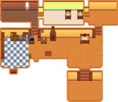

Дом

|
В разработке Эта статья или её часть находится в разработке. В настоящее время она может быть предметом расширения или крупного изменения. Последний раз редактировалось SeverSee в 2025-01-27 23:50:50. |
| Дом | |
.png) | |
 | |
| Выходной: | Н/Д |
| Адрес: | Ферма |
С начала игры в доме только одна небольшая комната, в которой есть односпальная кровать, камин, старый телевизор (дешевый или напольный), коврик и другой декор в зависимости от выбранного типа фермы. Все предметы, кроме камина и кровати, можно перемещать.
Напольные покрытия и обои можно изменить, купив новые у Пьера или в ДжоджаМарте. Новую мебель можно добавлять когда угодно.
Расширить дом можно у Робин в столярной мастерской. В каждой новой комнате могут быть свои полы и обои.
После свадьбы в дом добавляется дополнительная комната для мужа/жены.
Интерьер
.png/180px-House_indoors_(tier_1).png)


Расширения
| Экстерьер | Интерьер | Стоимость | Изменения |
|---|---|---|---|
.png)
|
.png/300px-House_indoors_(tier_2).png)
|
|
Добавляет кухню, на которой можно готовить, и холодильник, который функционирует как сундук. Продукты в холодильнике можно использовать в приготовлении пищи, даже если они не в инвентаре игрока. Добавляет отдельную спальню с двуспальной кроватью. Позволяет вступить в брак. |
.png)
|
.png/300px-House_indoors_(tier_3).png)
|
|
Добавляет две новые комнаты: пустую комнату и детскую с кроваткой и двумя односпальными кроватями, которая позволит вам иметь детей. Кухня и спальня увеличиваются. |
|
|

|
Добавляет подвал под домом. Лестница в подвал находится на кухне. В подвале стоят бочки, в которых можно выдерживать сыр и алкогольные напитки для повышения их качества и стоимости. |
Косметический ремонт
После максимального улучшения дома, Робин предложит сделать в доме косметический ремонт, для чего у неё появится отдельная вкладка в меню торговли. Все изменения можно бесплатно отменить в той же вкладке. В отличие от других улучшений дома, косметический ремонт делается моментально.
| Косметический ремонт | Изображение | Цена | Описание |
|---|---|---|---|
| Убрать колыбель | Бесплатно | Убирает возможность завести ребёнка | |
| Открытая спальня | |||
| Добавить южную комнату |  | ||
| Добавить угловую комнату | |||
| Расширить угловую комнату | |||
| Чердак | |||
| Каморка | |||
| Столовая | |||
| Открытая столовая |
Комнаты супругов
В комнатах супругов нельзя менять обои и полы, но можно поставить мебель. Попугай Эмили не будет виден другим игрокам, если у них меньше 4 сердечек дружбы с ней.


Достижения
С домом связано два достижения:
- Заживем! (Расширить свой дом)
- Красивая жизнь (Расширить свой дом до максимального размера. Дается за второе расширение.)
За третье расширение дома (подвал) достижение не выдается.
История
- 1.0: Введен.
- 1.1: Добавлены комнаты Шейна и Эмили. Добавлена возможность построить подвал. Игроки теперь могут клеить обои в коридорах расширенного дома.
- 1.3.27: В домах горной фермы и фермы в глуши теперь стоят каменные камины вместо кирпичных. Камины теперь мебель и их можно передвигать.
- 1.5: Добавлена уникальная комната для Кробуса когда он начинает жить у игрока.
- 1.5: Добавлена возможность двигать кровать. Появилась функция косметического ремонта.
- 1.6: Добавлены 4 опции косметического ремонта: столовая, чердак, расширенная угловая комната и каморка. Косметический ремонт теперь платный. Теперь можно передвигать Дом
| Здания | ||
|---|---|---|
| Магазины | Башня волшебника • Гильдия искателей приключений • Дварф вулкана • ДжоджаМарт • Казино • Клиника Харви • Кузнец • Магазин мороженого • Магазин Пьера • Меняла • Оазис • Ореховая комната Мистера Ки • Островной торговец • Разрушенный дом • Ранчо Марни • Рыбацкий магазин • Салун «Звездная капля» • Столярная мастерская • Странствующая торговка | |
| Дома | Горный проезд, д. 24 • Домик на дереве • Домик Леи • Домик Эллиота • Ивовый переулок, д. 1 • Ивовый переулок, д. 2 • Палатка • Речной проезд, д. 1 • Речной проезд, д. 2 • Усадьба мэра • Фермерский дом • Фермерский дом на острове • Фургон | |
| Здания для фермы | Фермерство | Вольер для слаймов • Домик • Колодец • Мельница • Птичник • Рыбный пруд • Сарай • Силосная башня • Стойло • Теплица • Хлев |
| Особые | Домик Джунимо • Золотые часы • Обелиск воды • Обелиск земли • Обелиск острова • Обелиск пустыни • Фермерский обелиск | |
| Другие здания | Баня • Кинотеатр • Клуб • Музей • Островной полевой офис • Склад Джоджа • Собачья конура • Хижина ведьмы | |